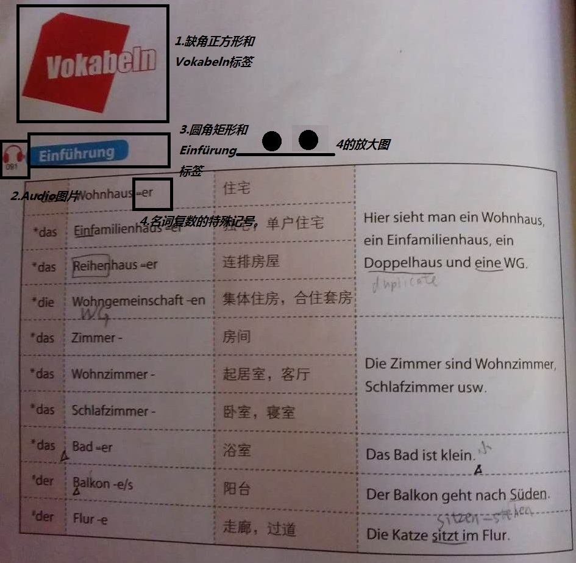
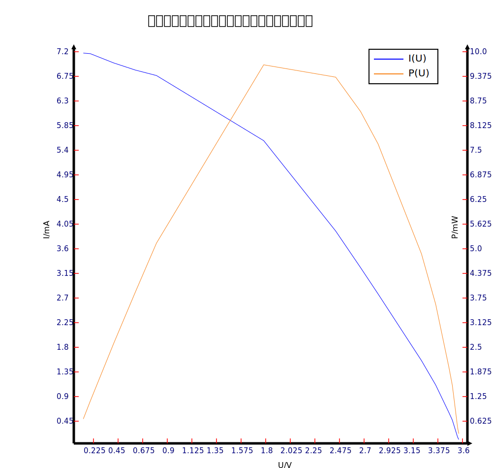

制作单词表的初衷是建立课本单词表电子化的入口，原则是凡是课本单词表有的元素都必须体现，没有的元素尽量不加，这和词典的思路不一样。
在我的Vokabeln6-1.xml中
图一
| *das | Wohnhaus | 住宅 | Hier sieht man ein Wohnhaus, ein Einfamilienhaus, ein Doppelhaus und eine WG. |
| *das | Einfamilienhaus | 独宅，单户住宅 | |
| *das | Reihenhaus | 连排房屋 | |
| *die | Wohngemeinschaft | 集体住房，合住套房 | |
| *das | Zimmer | 房间 | Die Zimmer sind Wohnzimmer,Schlafzimmer usw. |
| *das | Wohnzimmer | 客厅,起居室 | |
| *das | Schlafzimmer | 卧室，寝室 | |
| *das | Bad | 浴室 | Das Bad ist klein. |
| #der | Balkon | 阳台 | Der Balkon geht nach Süden. |
| #der | Flur | 走廊 | Die Katze sitzt im Flur. |
图二
Einfamilienhaus复数是Einfamilienhäuser